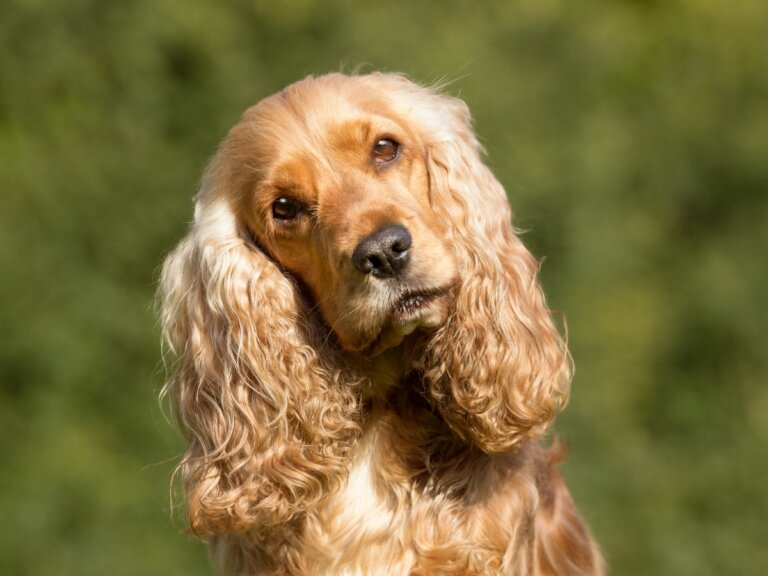

Razas medianas
Los perros de tamaño mediano pesan entre 10 kg y 25 kg y la mayoría de ellos tienen un cuerpo definido
y músculos bien equilibrados. Sin embargo, también hay un tipo de perro mediano que es alto y delgado.
La característica principal de los perros de tamaño mediano es que tienen aspectos tanto de los perros grandes
como de los perros pequeños en cuanto a capacidad atlética e inteligencia.
Algunas razas y sus caracteristicas:
-
Cocker
- Esperanza de vida: 12-14 años
- Altura: 33-45 cm
- Peso: 10-25 kg
- Su cabeza es bien modelada sin ser muy
fina ni muy tosca.Por otro lado, la nariz
es ancha, el hocico es cuadrado y sus orejas
son largas y caidas
-
Border Collie

- Esperanza de vida: 15-20 años
- Altura:45-55 cm
- Peso:10-25 kg
- destaca por ser tremendamente ágil,
con una forma física idónea para hacer ejercicio,
saltar y correr. Sus orejas pueden ser caídas,
semicaídas o erguidas